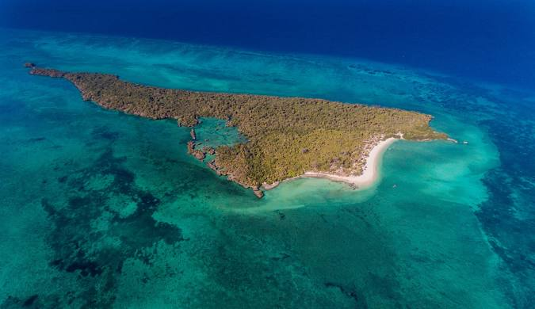
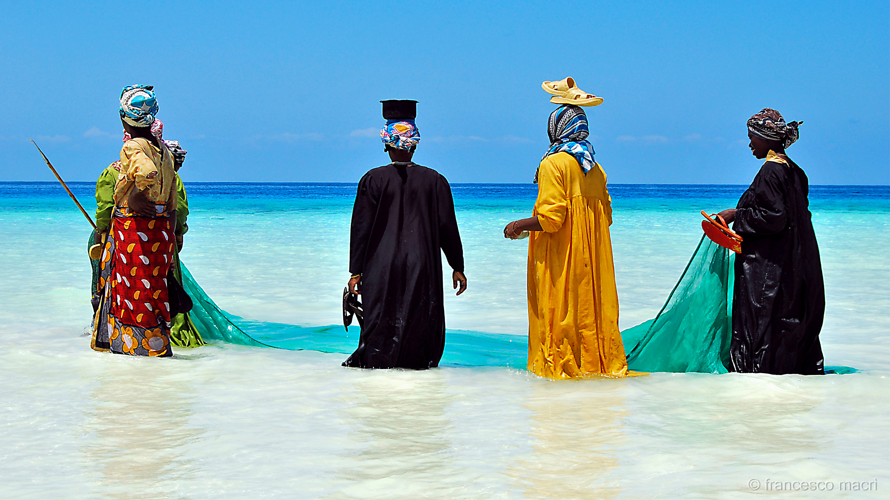

L'île Zanzibar
Situé à plus de 7000 kilomètres de la France, l’archipel de Zanzibar est niché au large de la côte Est de la Tanzanie, en face de la capitale Dar es Salaam. Perdu dans l’océan Indien, il mesure 30 kilomètres de large pour 85 kilomètres de long et tire sa culture si particulière de sa proximité avec le continent africain. Pendant de nombreux siècles en effet, Zanzibar a été considéré comme la porte de l’Afrique de l’Est du fait de sa localisation stratégique, au carrefour de la péninsule arabique, du monde persan et de l’Inde. Des influences géographiques encore visibles à travers la culture de l’archipel.
La géographie de Zanzibar
L’archipel de Zanzibar se compose de trois îles principales : Pemba, Mafia et Unguja, aussi appelée Zanzibar. Cette dernière, située au centre, est l’île principale de l’archipel. C’est ici que se trouve la plus grande ville et capitale de Zanzibar, Zanzibar Town (anciennement Stone Town). Plus loin, séparée de la Tanzanie par le canal de Pemba, l’île de Pemba est l’île la plus au nord de l’archipel. Quant à Mafia, il s’agit de la plus grande île du sud de la région.
La géographie de Zanzibar se distingue par son relief assez faible. Le plus haut sommet, perché à seulement 130 mètres d’altitude, se trouve sur l’île d’Unguja. Les terres sont entourées de lagons somptueux et mystérieux, où les récifs coralliens attirent une faune aquatique tout à fait unique..
De la richesse des traditions à la scène culturelle animée, des différentes religions pratiquées sur l’île aux spécialités culinaires à goûter absolument sur place
La culture à Zanzibar
La culture à Zanzibar se distingue avant tout par ses spectacles de danse et de musique. Découvrez le taarab, un courant musical mélangeant les influences indienne, arabe et africaine. A Stonetown et dans les autres villes du pays, de nombreux concerts sont organisés dans les bars ou même en pleine rue. Côté danse, ne manquez pas d’assister à des représentations de ngoma, des dans africaines rythmées et entraînantes, sur fond de tambours et de percussions traditionnelles. Difficile d’oublier que nous sommes en Afrique !
L’Islam est sans conteste la principale religion à Zanzibar, et joue un rôle très important dans la vie quotidienne des locaux. L’immense majorité des habitants est issue du courant sunnite, les autres sont issus des courants ismaëliens et dwoodis bohras. Dans chaque petite ville de l’île, vous aurez l’occasion de visiter de jolies mosquées, mais pas uniquement ! Sur un territoire aussi métissé que Zanzibar, d’autres religions viennent sans surprise compléter le tableau, majoritairement des catholiques et des protestants.
La gastronomie à Zanzibar
La gastronomie de l'archipel a fortement été influencée par une longue présence arabe mais surtout indienne et on retrouve très communément du curry, du biryani, des samoussas ou des chutneys. Un des plats phares de Zanzibar est par exemple le pilaf ou pilau, un riz cuit à l'étouffée avec des oignons, du lait de coco, des épices douces (cannelle, muscade, clou de girofle) et parfois des fruits secs et de la viande. Autre recette, indo-portugaise cette fois, le sorpotel vient de Goa et se compose de bœuf – viande et abats – mijoté avec du masala (mélange d'épices), de la pulpe de tamarin et du vinaigre. Plat d'origine arabe, le boko boko est la version zanzibarite du harees, un plat du Moyen-Orient souvent servi pour le ramadan. Il se compose de blé dur que l'on fait mijoter très longtemps avec de la viande (bœuf, poulet, mouton) jusqu'à ce qu'il devienne fondant à la manière d'un porridge. Sinon goûtez le mchuzi wa pweza ou pweza wa nazi, un curry de poulpe au lait de coco. On retrouve une grande diversité de street-food comme l’urojo qui se présente sous forme d'un bouillon épicé avec mangue, pommes de terre, viande grillée, légumes crus (tomate, oignon, salade, concombre, etc.) ainsi que des croquettes d'oignon frites avec une sauce pimentée. Sinon on peut citer les katlesi, des croquettes frites aussi bien à base de poisson que de légumes, de bœuf ou d’œuf dur. A moins de préférer une pizza zanzibar, qui n'a de pizza que le nom, qui ressemble plus à une galette que l'on fait frire sur une plaque avant de la garnir d'un mélange de viande hachée, de tomate, d'oignon, d'épices et de fromage. Découvrez également les pains au sésame – similaire à des naans – que l'on appelle ici mkate wa ufuta. Enfin les mishkaki sont des brochettes de bœuf finement épicées qui se rapprochent d'un shish kebab.

Les plages à Zanzibar
Autour de cette île de Zanzibar, la température de l'océan est relativement constante avec un minimum de 25°C en octobre et un maximum de 29°C de janvier à mars. Un voyage balnéaire et plage à Zanzibar devrait se caler au mieux en février. En effet, le mois de février réunit toutes les meilleures conditions pour ne pas vous tromper. Sinon entre juin et août, les journées sont aussi très bien. Quelques nuages le matin jusqu'à 9h/10h et tout se dégage tant que le soleil chauffe la journée. Des averses de nuit et tôt le matin peuvent tomber et encore rarement.
Les plages de Zanzibar sont absolument magnifiques! Elles sont réputées pour leurs eaux cristallines, leur sable blanc et leurs superbes couchers de soleil. C'est un endroit parfait pour se détendre et profiter de la beauté naturelle.
Il y a tellement de belles plages à Zanzibar! Vous devriez absolument visiter Nungwi Beach pour ses eaux turquoise et ses activités nautiques, ainsi que Paje Beach pour ses vastes étendues de sable blanc idéales pour se détendre. Kendwa Beach est également populaire pour ses couchers de soleil spectaculaires.


Les événements à Zanzibar
De nombreux événements à Zanzibar (fêtes, festivals et manifestations culturelles) rythment chaque année la vie des locaux et des voyageurs. Partez au moment de la Journée Mondiale de l’Afrique en mai et plongez dans la culture locale, assistez au Mwaka Kogwa Festival à Makunduchi et apprenez-en plus sur les rites et coutumes zoroastriens, découvrez la fête de Sikukuu qui clôture le ramadan… Autant d’occasions de partir à la rencontre d’un peuple chaleureux et accueillant tout en participant activement à leurs traditions.